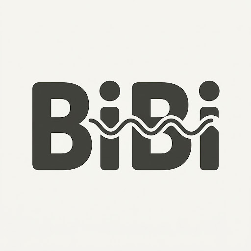

LIVE DEMO
Talk to BiBi
Hold the button below and say something.
Connecting…
lightbulb
Ready to simplify?
Join the waitlist for the early access distillation engine.

LIVE DEMO
Hold the button below and say something.
Connecting…
Join the waitlist for the early access distillation engine.